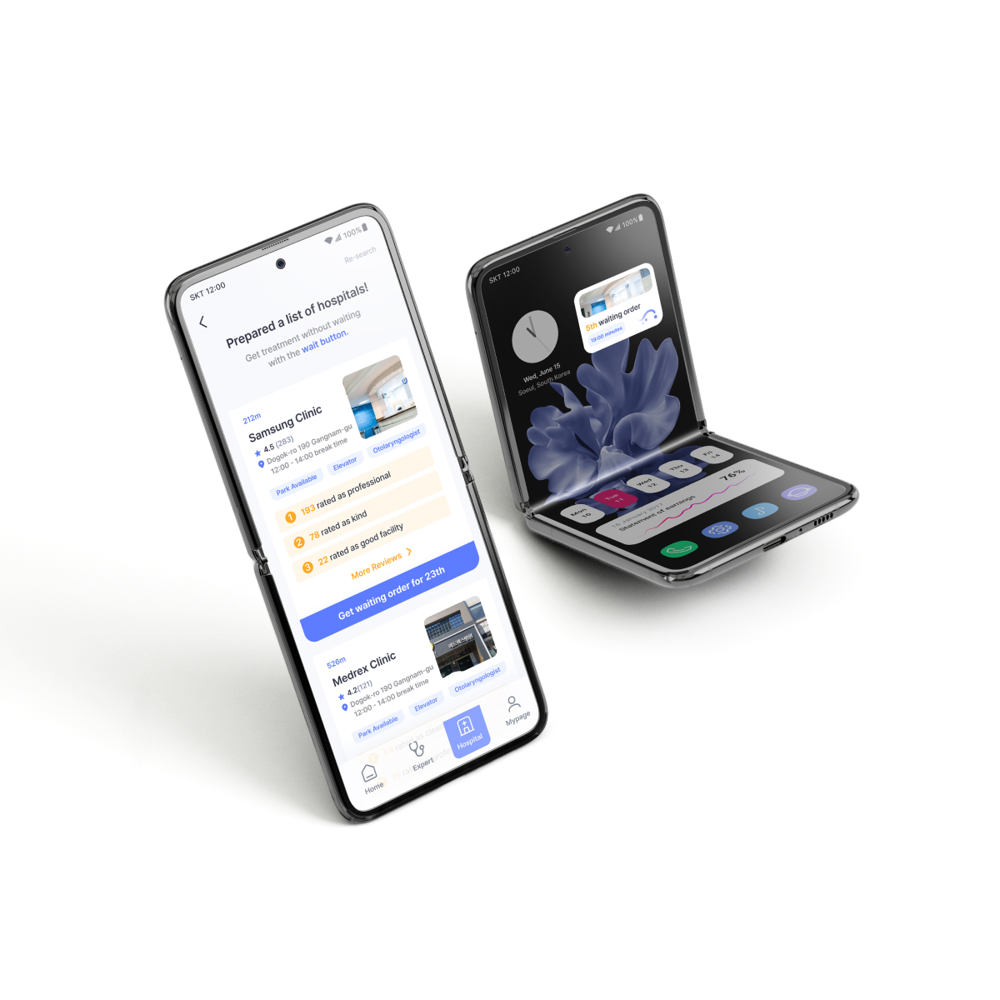
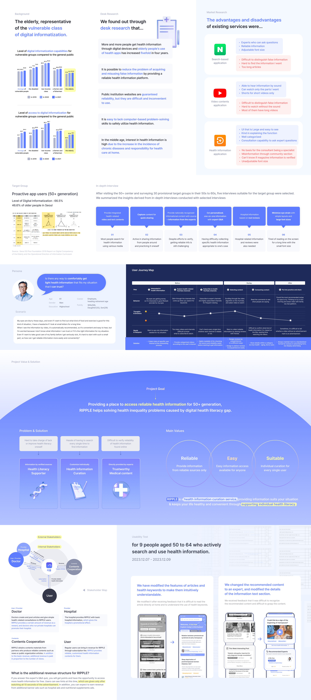

Ripple
UI/UX Design · 2D & 3D Graphic Design
Sep 2023 - Jan 2024
Student Team Project
4 UI/UX Designer

Overview
Ripple is mobile service design project for a reliable health information platform tailored to the health conscious 50 plus generation.
Instead of relying on users’ digital literacy skills to navigate unreliable and unverified information, the platform delivers curated content directly published by certified medical professionals.
Research & Solution
This project began with the question of whether data vulnerable groups can safely access and evaluate health information online, given that the accuracy of such information can have significant personal consequences. If not, how can this be improved.
Several hypotheses were developed regarding data vulnerable populations, online health information seeking behavior, levels of data literacy, and the ability to operate smart devices. These hypotheses were examined through secondary literature review and statistical analysis, interviews, participation in field based volunteer activities, and surveys. Based on this research process, key pain points were identified and corresponding solutions were designed.

Design
Building on the proposed solutions, the project conceptualized a health information service designed to serve two key stakeholders.
On one side, medical professionals and hospitals can share verified information while increasing their visibility and credibility.
On the other, users in the 50 plus generation can access trustworthy hospital details and personalized health content aligned with their interests.